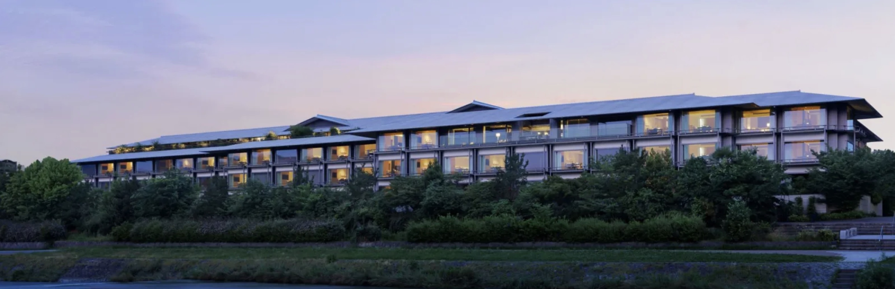
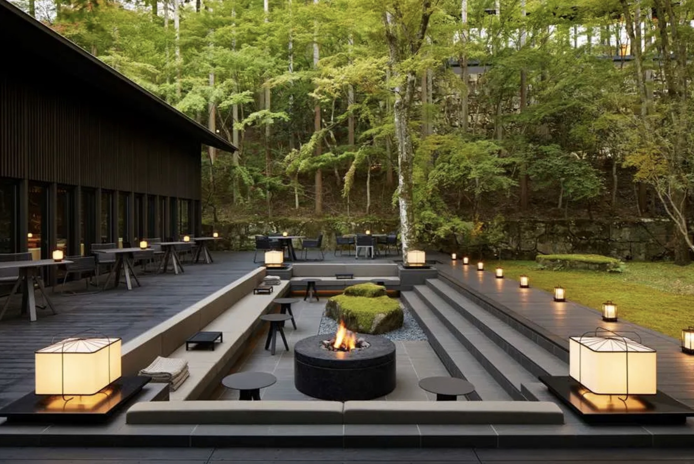
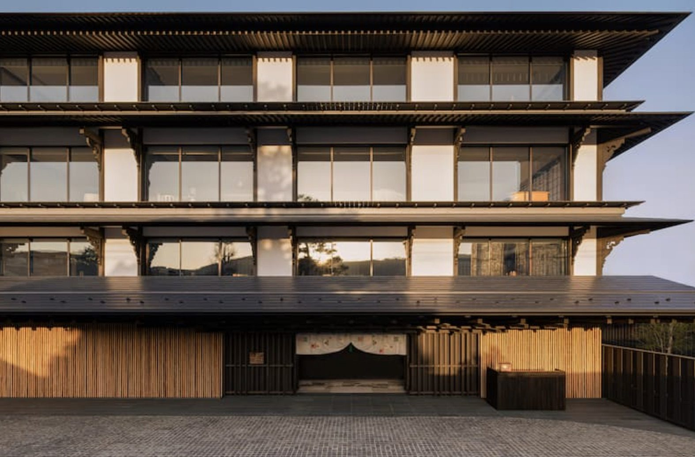
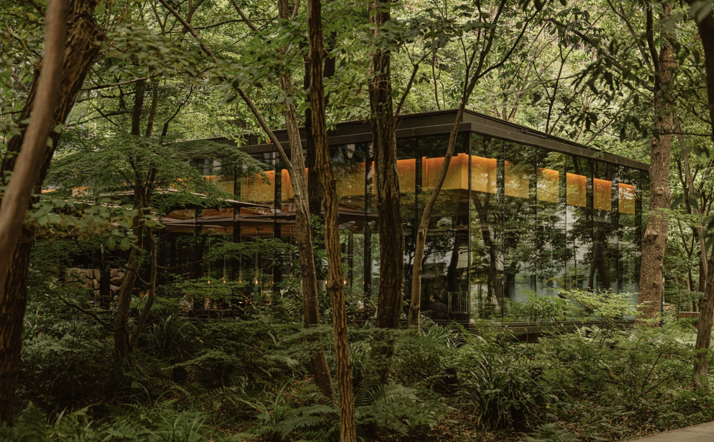

Japan
From temple-lined Kyoto to neon-lit Tokyo and the food capital of Osaka, Japan rewards travelers who want depth over pace. A well-built itinerary blends culture, cuisine, and genuinely exceptional hotels.

Kyoto

A secluded forest sanctuary near the city's temples; the most serene, most "Aman" experience in Japan. Best for travelers who want quiet immersion over convenience.

Newer and set in the historic Miyagawa-chō geisha district, with a strong design pedigree (Kengo Kuma) and private onsen suites. A great pick for couples who want culture without sacrificing polish.

Riverside, walkable, and more classically "hotel" in feel — ideal for guests who want a central base with full-service consistency.
Tokyo

Serene, minimalist, perched atop Otemachi Tower with views of the Imperial Palace gardens. The quiet counterpoint to the city's energy.

Bolder and more contemporary, with some of the best dining in the city — three Michelin-starred restaurants on-site.

Classic, central Ginza location, excellent for first-time visitors who want to be in the middle of everything.
Osaka
Elegant, central, with signature St. Regis butler service — a refined base for exploring Osaka's food scene.
Sky-high in the Nakanoshima Festival Tower with sweeping river views and a more contemporary, art-forward feel.
English-manor-meets-Japan design, a longtime favorite for its Club Lounge and classic service.
Signature Experiences
Planning Japan? I'll sequence the cities, the trains, and the tables.
Start Planning